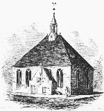

|
by
The Dutch Reformed Church was the centerpiece of Dutch culture in early Albany and its predecessor the village of Beverwyck. The church building itself was the most prominent feature on the community landscape. It was situated in the middle of the city’s main intersection from the 1650s to 1806. Previously, services had been held in a building owned by the Patroon and located near Fort Orange. Enlarged about 1715, the Dutch church shown on the left, and in all contemporary community iconography, was the largest building in colonial Albany and was described by a number of visitors. The Dutch church clearly was colonial Albany's premier social institution! Staffed continuously by a European-born domine or minister, the Albany Dutch church represented continuity with the past and stability. Its lay leaders or Deacons were among the most prominent Albany businessmen and officials. Well-supported by these worthies, by more typical, rank-and-file city people, and by those in the countryside until Reformed Churches were built in Schenectady, Kinderhook, Catskill, and Schaghticoke, the Albany Dutch Church also provided poor relief, buried the dead, sponsored missionary work among Native peoples, and often served members of other congregations whose houses of worship were less well-established. Regardless of ethnicity, most early Albany families received some needed service from the Dutch Church. The North Pearl Street Dutch church was opened in 1798 and replaced the old structure which was torn down in 1806. By that time, a second Reformed congregation was serving the south side of a booming city. Other Reformed churches followed in other parts of the city but the North church serves today under the banner of the First Church in Albany! In 1815, the newspaper published an article on the division of the Reformed churches which included a list of those churchmen serving on the "Great Consistory." At some time during the seventeenth century, the church took title to a large tract of flood plain land in the southeastern quadrant of the city. For good reason, it was known as "the Pastures" and was intended to provide the church with a source of income. In 1815, the church deeded "the Pastures" back to the city and it was immediately marked for development. Today it is called the South End." In September 1825, a list of those resident/parishioners subscribing to endowing a third professorship at the New Brunswick Theological Seminary contained the names of Albany's most prominent Dutch ancestry personages and the amount each subscribed. This sketch is mostly concerned with the membership of the church and with its role as a community-based social and economic institution. Perhaps it will one day responsibly address the core community question regarding the place of religion in the actual lives of the people of colonial Albany. It cannot do justice to liturgical and spiritual matters - only partially because most surviving information comes from official church sources, from the perspective of its ordained leadership, and from the impressions of visitors. However, it was an extremely important part of the Albany community during its formative years. In the beginning, and for most of the pre-Revolutionary era, the Dutch church represented the most important and often only spiritual identity for the community and its ever-growing hinterland. Ministers at the Albany Dutch Reformed Church notes
Sources: The comprehensive study
by former church historian Robert
S. Alexander stands above all others. The church's official
website also provides historical information ND an overview timeline.
Many of the early church records have been translated, transcribed,
and printed. At the beginning of our enquiry, the printed records were
extensively utilized by the Colonial Albany
Project. Since then, baptism and marriage resources have been placed
online!
Burial information also is available on the Internet
- as are tombstone inscriptions
from the church plot at Albany Rural. The latest addition to the available
resources is Janny Venema, Deacons' Accounts, 1652-1674: 1st Dutch
Reformed Church of Beverwyck-Albany, New York (Grand Rapids, MI,
1998); online
preview. See also, Allan J. Janssen, Gathered
at Albany: A History of a Classis (Grand Rapids, MI, 1995).
Engraving of a drawing
or painting of the Dutch church located in the intersection of State
and Market Streets is of unknown origins. Perhaps the earliest representation
of it comes from the streetscapes produced by Albany-born scientist
and artist James Eights. This
particular engraving was photographed from The Bicentennial
History of Albany. The engraving of the rendering of the interior
of the State Street church was printed in Weise's History
of Albany. Many versions of both likenesses have appeared
in print over the past 150 plus years. We have not researched the
history of these images but the print collections of the Albany Institute
of History and Art and the First Church itself would be likely places
to start. The Domine was an ordained minister of
the Dutch Reformed Church sent by the church leadership in Holland
to minister to the Albany congregation. Beginning with the tenure
of Gideon Schaets in 1652, the Albany Reformed Church was served continuously
by a Dutch Reformed domine. When a domine died in Albany (which happened
several times), a new minister was called immediately. On several
occasions, two domines shared the Albany pulpit. Westerlo's Memoirs provides insight on the domine's activities. The Deacons were church officers elected
by the congregation to oversee and take charge of all church business.
These community leaders represented the will of the congregation in
church affairs. Church finances, contract work, later real estate
transactions, dealings with government and the courts, calling of
new ministers and all other non-spiritual matters were their major
responsibilities. The Sexton was employed to care for the church and grounds. His responsibilities
included ringing the bell and digging graves. Here is a partial list
of church sextons: Anthony B. Bradt;
Hendrick Roseboom; Barent
Bradt; Jacobus Radcliff
(1729-66); Barent Bogert.
The Second Reformed Church officially split
off from the First Church in 1815. However, the cornerstone of the new
church located on the site of the former church cemetery
(between Beaver and Hudson Streets) was laid in 1806. First called the
"South" and then the "Middle" Dutch church, that building served until
1881 when a new church was built on the corner of Swan Street and Madison
Avenue. Links to more general church information: Organization;
Reformed churches;
More
official but global;
German Reformed Church: During the 1760s, a
number of German émigrés petitioned for land on which
to build a German Reformed Church. Follow this
link to more information about the church on this website.
Follow this
link to more information about the Albany Dutch Reformed church
on this website.
Home | Site Index | Navigation | Email | New York State Museum first posted: 1998, last revised 8/23/16 |